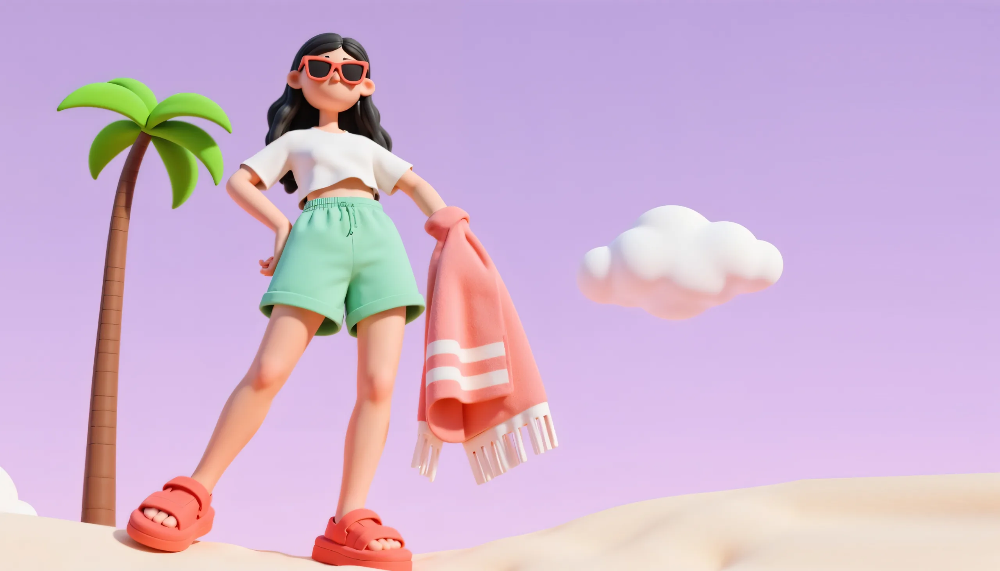
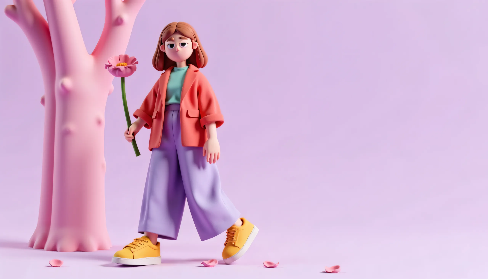
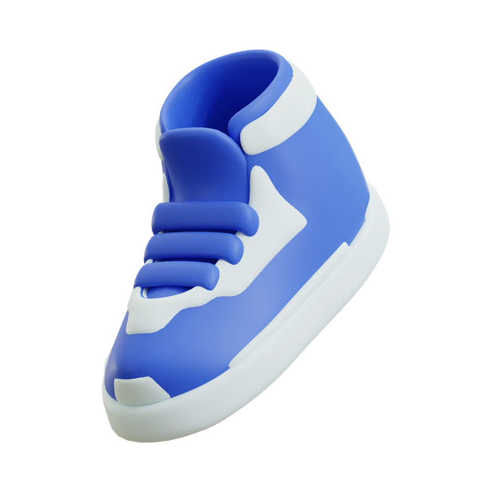
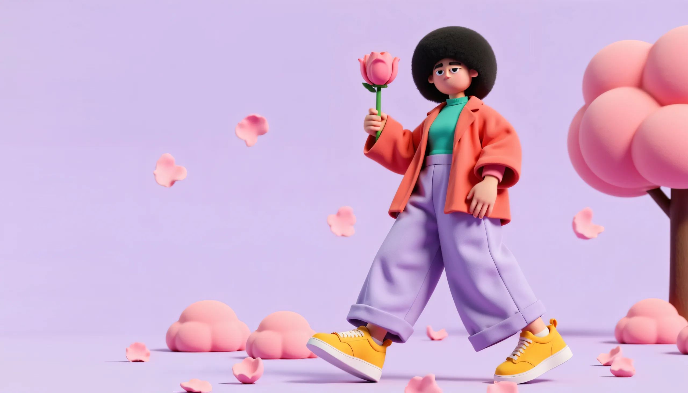
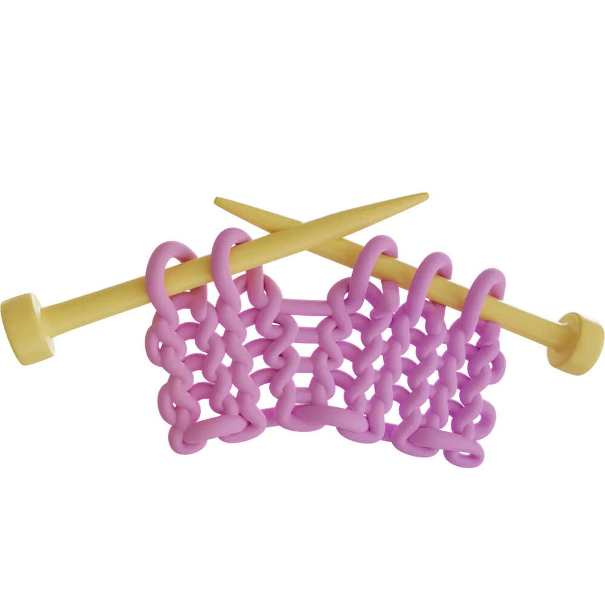
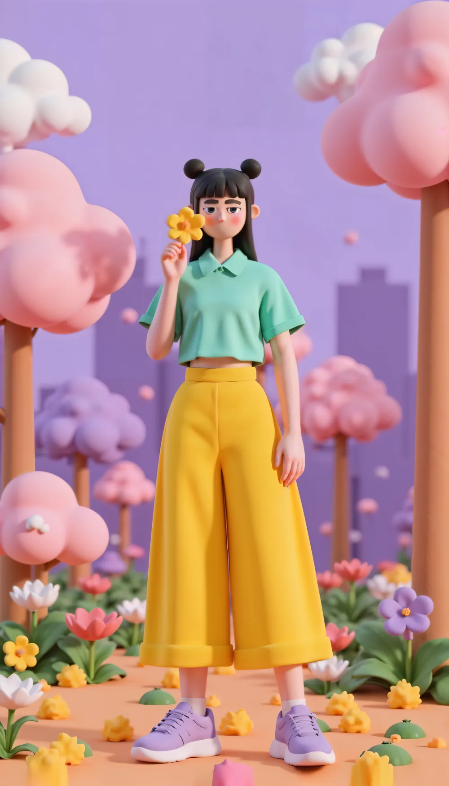

Meloa
Every stitch, a hug.
Explore the Collection
Soft beginnings, strong care.
Meloa creates gentle clothing for little ones, blending comfort, playfulness, and care in every thread. Clothes that move with them, grow with them, and hug them.

The Cozy Cloud Hoodie
As soft as a hug, as warm as sunshine. Designed for play, built for comfort.
Own the Hug

The Collection
Sunny Steps, Starry Snug, Dreamy Days

Care stitched into every piece.

We use gentle fabrics and thoughtful design, making childhood both comfortable and kind to the earth.

Childhood is short.
Comfort lasts forever.
Meloa, 2025.